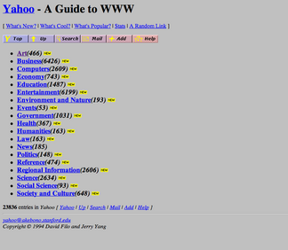

The Early Days of the Internet
During the 1990s, web design was still relatively new. Websites were mostly created using basic HTML, with limited options for layouts and styling.
Early websites often featured colorful backgrounds, animated GIFs, blinking text, and simple navigation links.
Popular Design Features
- Bright colors and patterned backgrounds
- Animated GIFs and decorative graphics
- Table-based page layouts
- Simple text navigation
- Personal websites and guestbooks
The Rise of Personal Websites
Services such as GeoCities allowed people to create and publish their own websites. Many personal websites reflected their creators' hobbies, interests, and personalities.
Why This Era Matters
The 1990s helped establish the foundation of modern web development. HTML made it possible to organize information and connect pages using hyperlinks, while CSS began giving developers greater control over website appearance.